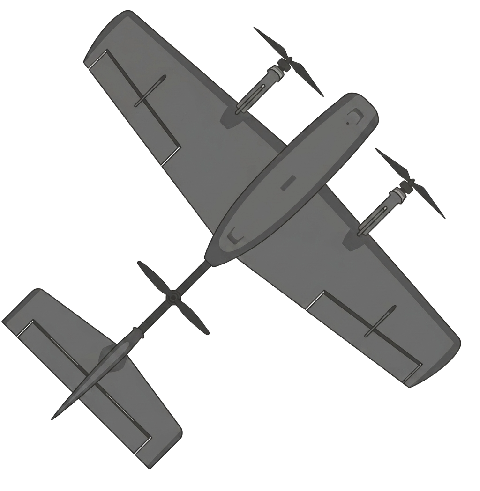

AU AU! DU HAR SKADET DEG SELV!Legevakt: 116 117 · Ambulanse: 113R for å restarte
Ikke armert: gass i bunn + fullt sideror høyre i 5 sek for å arme (eller K)
Throttle ikke i idle - senk gasspaken helt for å aktivere kontroll
Ingen løftemotorer aktive i denne modusen - bytt til en Q-modus (f.eks. QHOVER) for å lette
Hjempunkt satt
TAILSTRIKE!
MODUSBYTTE AVVISTFor lav luftfart for MANUAL
LAVT BATTERIAutomatisk QRTL aktivert
ModusQHOVER
MR-assist100 %
MotorPå
InputTastatur
KameraChase
FlyLiten
Høyde0.0 m
IAS0.0 m/s
GS0.0 m/s
Gass0 %
Trim0.0°
Batteri100 %
Øvelse-
Status-
Tid0:00
GCS
Modus-
Høyde-
Luftfart-
Avstand hjem-
Batteri-
Rate-innstillinger
Fly og kamera
20
0.0°
Trim kan også justeres i flukt med [ / ] (tastatur).
Vind
5 m/s
0°
30%
VTOL/overgang
Navnene følger ArduPilot sine egne Q_*-parametre - se Hjelp for modusoversikten.
12 m/s
5 s
1.0
1.0°
RTL/failsafe
QRTL (tastatur: 7) navigerer hjem til punktet der motoren sist ble slått PÅ, og lander automatisk. Navnene følger ArduPilot sine egne Q_*-parametre.
15 m
40 m
70 %
5 m/s
1 m/s
6 m
0.5 m/s
Batteri (simulert)
Forenklet utholdenhetsproxy, ikke ekte spenning/mAh.
12 min
30 min
20 %
Flightlogg
Siste 30 sekunder, samplet ca. hvert 0.15s. Fryses automatisk ved krasj (starter igjen ved Reset). Nyttig for feilrapportering - kopier og lim inn.
Fjernkontroll-kalibrering
Velg tastatur, en spesifikk tilkoblet enhet, eller automatisk (bruker første tilgjengelige gamepad).
Beveg en spak for å se hvilken kanal som endrer seg i tabellen under.
Knappemapping (brytere)
Trykk "Sett" og bruk deretter bryteren på senderen - fungerer enten bryteren kommer som en knapp eller som en kanal.
Fjernkontroll-kalibrering
Vi oppdaget en tilkoblet fjernkontroll. Sjekk at kanalene under styrer riktig stikke i simulatoren, og kalibrer fullt utslag før du flyr.
Beveg en spak for å se hvilken kanal som endrer seg i tabellen under.
Ved fullt utslag på stikkene skal verdiene over kunne bevege seg til ytterpunktene -1.00 og 1.00. Hvis de ikke gjør det, må du kalibrere fullt utslag ved å trykke på knappen under.
Tastaturkontroller
W / SHøyderor / stikke fram-bak (pitch)
A / DSkråror / stikke venstre-høyre (roll)
Q / ESideror / gir venstre-høyre (yaw)
Shift / CtrlGass opp / ned - kollektiv i Q-moduser, trekkmotor i MANUAL/FBWA (mål-luftfart i FBWB)
[ / ]Trim høyderor ned / opp (kun FBWA/FBWB/MANUAL)
8QRTL - naviger automatisk hjem (til punktet motoren sist ble slått PÅ) og land. Flyr fastvinget hvis langt unna, går over til VTOL-modus innenfor RTL_RADIUS fra hjem - se RTL/failsafe-panelet
Bytt modus = transisjonDet finnes ingen egen transisjonsbryter - bytt til en Q-modus for umiddelbar svevemyndighet, bytt til MANUAL/FBWA/FBWB for å fly videre som fastvinget
QHOVERSom QSTABILIZE + Alt Hold (sentrert gasspak holder høyden)
QLOITERSom QHOVER + posisjonsholding (slipp stikken for å stoppe/holde) + weathervaning
QACRORate-styrt svevemodus, ingen selvnivellering (som Acro)
MANUALDirekte rorstyring, løftemotorene er alltid AV - kun for trim-sjekk/taksing
FBWASelvnivellerende fastvinget marsjflyging - løftemotorene assisterer automatisk til assist-farten nås
FBWBSom FBWA (samme rull/quad-assist), men elevator styrer ønsket klatre-/synkerate i stedet for en vinkel direkte, og gasspaken styrer ønsket luftfart i stedet for pådraget direkte - autopiloten holder selv høyden/farten
KMotor av/på, samme som knappen øverst
CBytt kamera (Chase → FPV → VLOS)
Høyreklikk + draSe rundt flyet i Chase-kamera (påvirker ikke styringen)
Fly-størrelseLiten/Middels/Stor i Fly og kamera-panelet - ulik fartsgrense for steiling og treghet
LøftemotorerFire faste (ikke vippbare) motorer gir vertikalt løft i Q-moduser - se VTOL/overgang-panelet for overgangsinnstillinger
SteilingFor lav fart/for bratt sving kan la én vinge steile først - flyet ruller/faller da mot den siden
RullebaneKan brukes til rulletakeoff/-landing i FBWA/FBWB/MANUAL, men flyet kan også ta av rett opp i en Q-modus
PortløypeVest for rullebanen - en rekke porter å fly gjennom
Hus og låverØst for rullebanen - bygninger med vindusåpninger du kan fly gjennom
Liten byLitt lenger øst - landemerker å navigere etter (ikke gjennomflybar)
TailstrikeHalen kan treffe bakken ved for hard rotasjon/landing - gir et eget varsel
VindAktiver i Vind-panelet - i QLOITER dreier nesen automatisk inn mot vinden (weathervaning)
MHeewing T2 introprogram - syv øvelser for VLOS Heewing T2 Cruza VTOL, med diplom til slutt
Heewing T2 introprogram
Fyll inn navnet ditt under og send diplomet (PDF) til
rpas@ffi.no for registrering.
Denne siden er statisk og lagrer informasjon kun lokalt i din egen nettleser - ingen informasjon sendes noe sted.

BEKREFTELSE
Heewing T2 Cruza VTOL – VLOS simulatortrening
Dette bekrefter at
har gjennomført og bestått Heewing T2 Cruza VTOL – VLOS simulatortrening ved FFI: